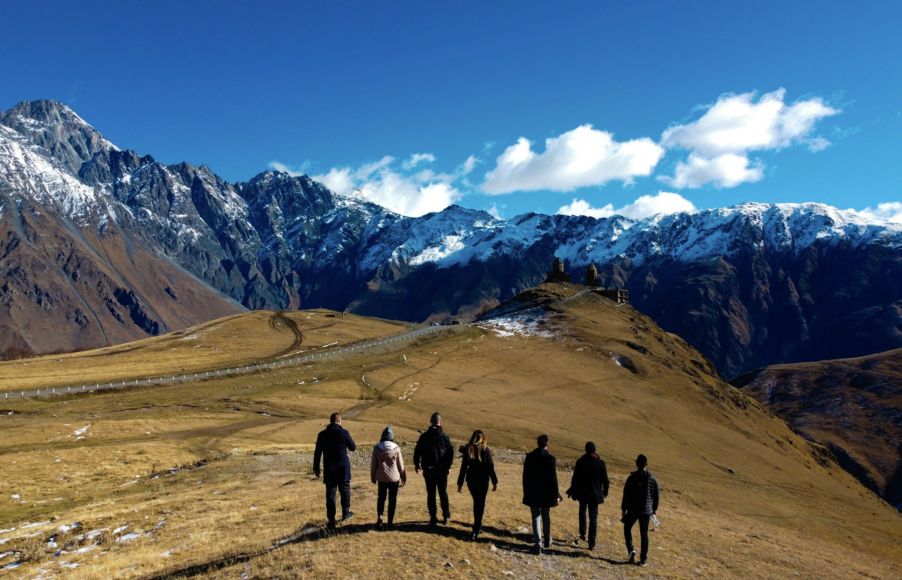
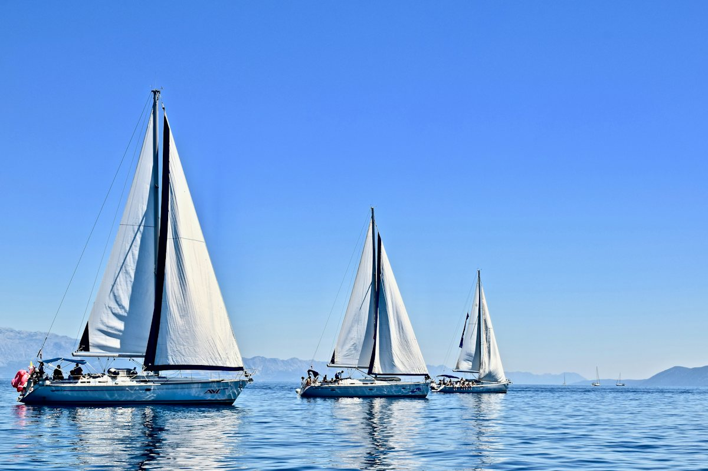
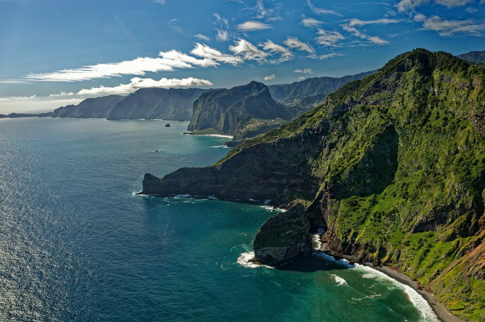
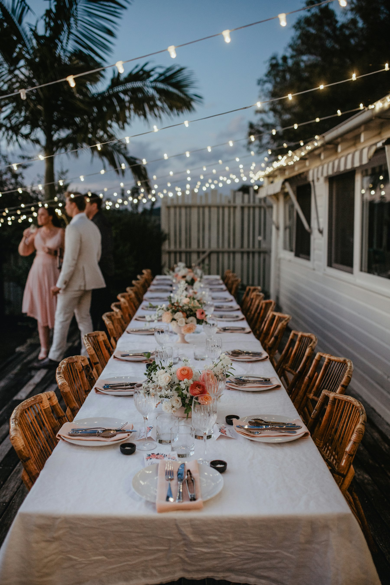
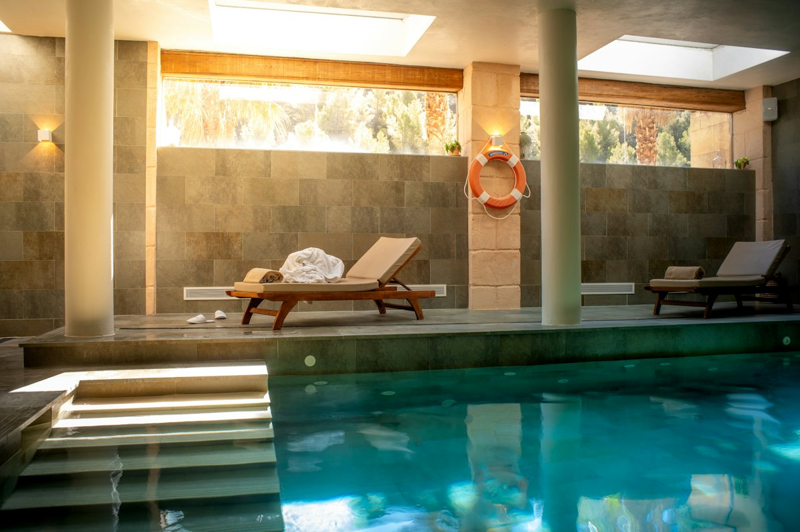

Surf en groupe
Cours par niveau avec moniteurs diplômés, combinaisons et planches fournies.
8–60 pers.½ journée●●●

Classées par énergie, durée et taille de groupe, avec les destinations où nous les organisons.
●○○ calme · ●●● intense
Cours par niveau avec moniteurs diplômés, combinaisons et planches fournies.

Un ou plusieurs bateaux privatisés, déjeuner à bord et baignade dans une crique.

Le long des falaises, avec un guide pour 8 personnes.

Plusieurs voiliers avec skipper, une course amicale et une remise de prix.

Des bateaux à huit rameurs : impossible d'avancer sans se synchroniser.

Un itinéraire adapté au groupe, pique-nique local et guide de montagne.

Rappels, sauts et toboggans naturels, encadrés par des guides certifiés.

Routes côtières ou vignobles, accessible à tous grâce à l'assistance.

Quad ou dromadaire au coucher du soleil, puis dîner sous les étoiles.

On cuisine en équipes, on mange ensemble ce qu'on a préparé.

Paella, pâtes fraîches ou tapas : un chef juge, une équipe gagne.

Dans une quinta, un domaine toscan ou une cave géorgienne, avec le vigneron.

Une grande table dressée dans un lieu inattendu : vignes, plage, cour de palais.

Avec un facilitateur indépendant, pour sortir de la réunion avec des décisions.

Énigmes sur smartphone à travers la vieille ville, par équipes mélangées.

Chacun repart avec sa création, peinte à la main.

Tous niveaux, face à la mer ou dans le jardin du lieu.

Hammam traditionnel ou bains thermaux privatisés pour le groupe.

Avec une association locale, suivi d'un déjeuner partagé.

Plantation, récolte ou cueillette dans une ferme bio, puis repas avec les producteurs.
Lieu, programme, activités, vols de chaque participant et budget par personne. Sans engagement.